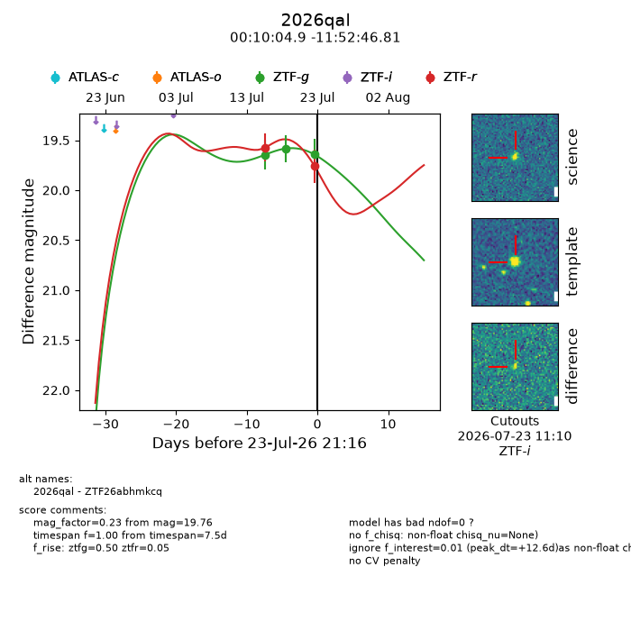
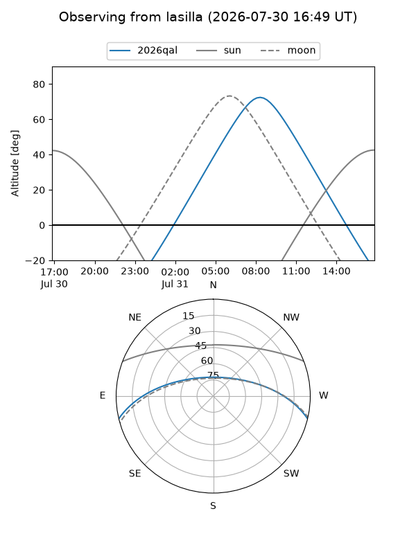
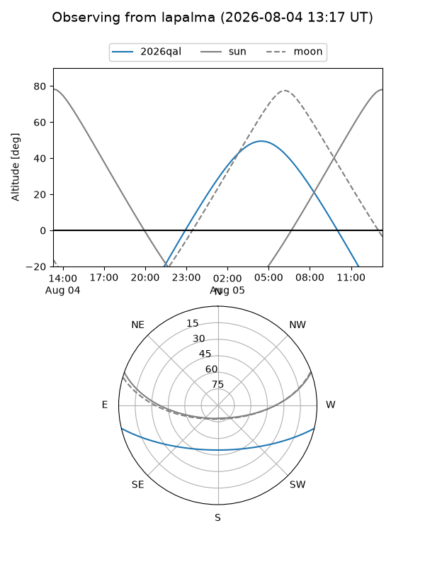
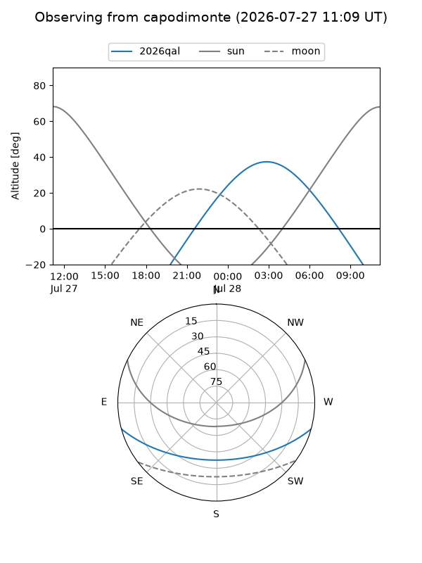
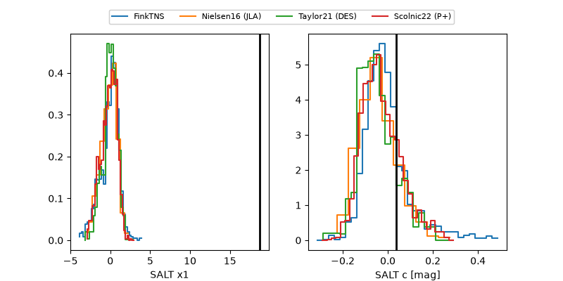

2026qal
Target 2026qal at 2026-07-23 21:19
Aliases and brokers:
FINK-ZTF: ztf.fink-portal.org/ZTF26abhmkcq
Lasair-ZTF: lasair-ztf.lsst.ac.uk/objects/ZTF26abhmkcq
ALeRCE-ZTF: alerce.online/object/ZTF26abhmkcq
YSE-PZ: ziggy.ucolick.org/yse/transient_detail/2026qal
TNS name: wis-tns.org/object/2026qal
Direct TNS query: direct search
alt names
ZTF26abhmkcq (ztf,fink_ztf)
2026qal (tns,yse)
Coordinates:
equatorial (ra, dec) = 2.5204,-11.87967
equatorial (HMS+DMS) = 00:10:04.89,-11:52:46.81
galactic (l, b) = (88.4549,-71.92522)
Flags:
TNS type: nan
peak dt: +12.6
Photometry:
last ztfg=19.64, ztfr=19.76
3 ztfg, 2 ztfr detections
Lightcurve

Visibility



Additional plots
